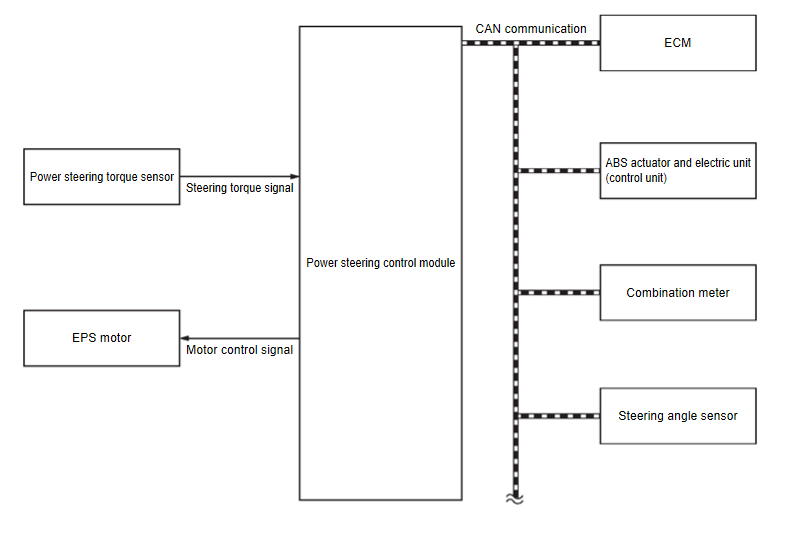
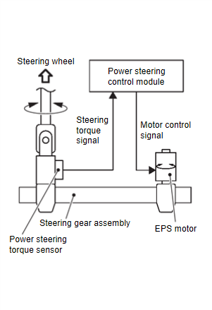

轉向 - 轉向控制系統 - 系統說明 - 系統 - EPS 系統
系統說明
N507020380000Q00ENG
系統圖

CF100AOZAA00ENG
零件名稱
功能
動力轉向控制模組
請參閱轉向機總成
轉向機總成
.
EPS 馬達
請參閱轉向機總成
轉向機總成
.
動力轉向扭力感測器
請參閱轉向機總成
轉向機總成
.
ECM
主要透過 CAN 通訊將下列訊號傳送至動力轉向控制模組。
引擎狀態訊號
主要透過 CAN 通訊從動力轉向控制模組接收下列訊號。
電瓶供電電流訊號
EPS 扭力開啟訊號
ABS 作動器與電動單元 (控制單元)
主要透過 CAN 通訊將下列訊號傳送至動力轉向控制模組。
車輛車速訊號 (ABS)
轉向角感測器
主要透過 CAN 通訊將下列訊號傳送至動力轉向控制模組。
轉向角感測器訊號
儀表
根據動力轉向控制模組經 CAN 通訊傳送的訊號，點亮動力轉向警告燈。
說明
EPS 系統主要由動力轉向控制模組、EPS 馬達、動力轉向扭力感測器組成。

CF100AP0AA00ENG
EPS 系統根據從 ECM、ABS 作動器及電氣單元（控制單元）與轉向角度感測器經 CAN 通訊接收的資訊，以及從動力轉向扭力感測器接收的資訊，計算控制訊號並傳送至 EPS 馬達。
動力轉向控制模組對資料進行運算處理，例如來自動力轉向扭力感測器的方向盤轉向力（感測器訊號）、車速訊號等。然後根據行駛狀況產生最佳輔助扭力訊號輸送至 EPS 馬達。
引擎啟動後，EPS 系統執行控制。
當系統發生故障時，失效保護功能會停止 EPS 系統（手動轉向狀態）或限制其作動（固定轉向輔助力狀態）。請參閱
失效保護
.
動力轉向控制模組在連續大量使用動力轉向功能（例如：全轉向）時，會降低輸出至 EPS 馬達的訊號，以保護 EPS 馬達及動力轉向控制模組（過載保護控制）。請參閱
保護功能
.
動力轉向警告燈點亮條件
當 EPS 系統發生故障時點亮。表示失效保護模式作用中，進入手動轉向狀態（方向盤轉向力變重）。
點火開關開啟時亦會點亮，以進行燈號檢查。系統正常時，引擎啟動後熄滅。
狀況
動力轉向警告燈
點火開關開啟。（燈號檢查）
開啟
引擎啟動後（產生轉向輔助力）
關閉
當轉向輔助停止時
開啟
已加入書籤
書籤數量過多。
請刪除後重新加入書籤。
×
){kind=link}
){kind=link}